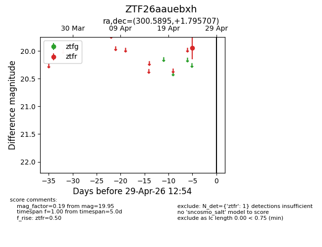
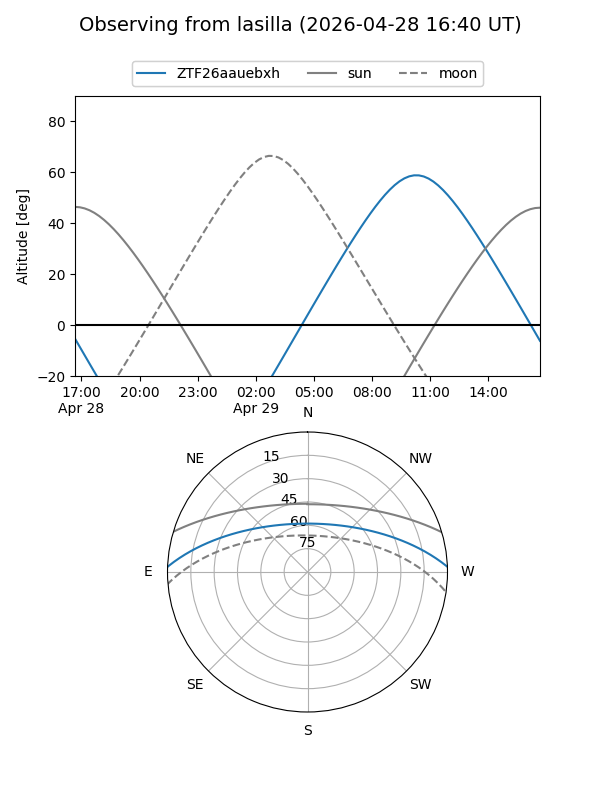
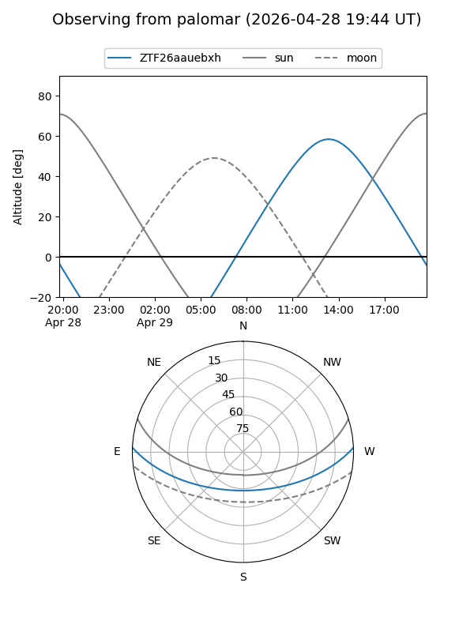
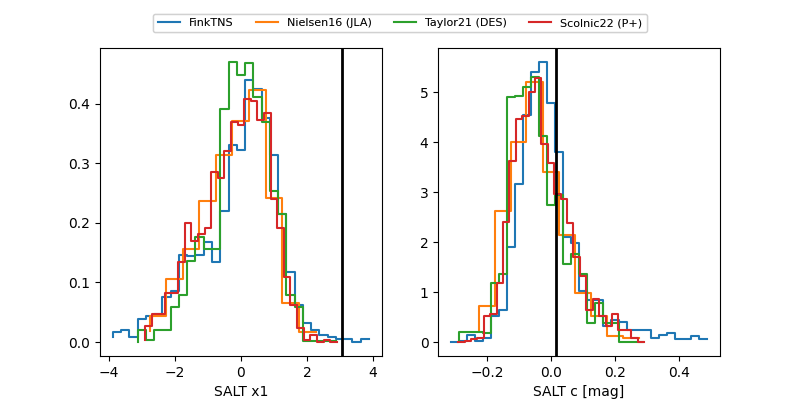

ZTF26aauebxh
Target ZTF26aauebxh at 2026-04-29 12:58
Aliases and brokers:
FINK: link
Lasair: link
ALeRCE: link
alt names
ZTF26aauebxh (ztf,fink_ztf)
Coordinates:
equatorial (ra, dec) = 300.5895,+1.79571
equatorial (HMS+DMS) = 20:02:21.48,+01:47:44.55
galactic (l, b) = (42.8626,-14.86889)
Flags:
Photometry:
last ztfr=19.95
1 ztfr detections
Lightcurve

Visibility


Additional plots
